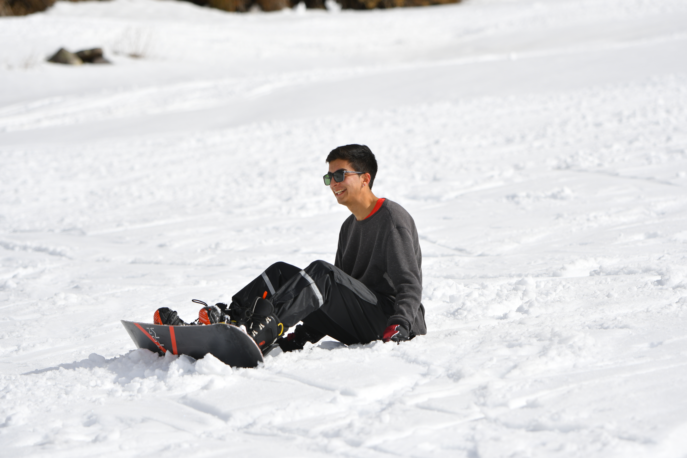

01 / NOTAS DEL LABORATORIO
Aprender. Construir. Compartir.
Para seguir explorando
Abriendo el cuaderno de experimentos…
SIEMPRE HAY ALGO MÁS POR APRENDER.
02 / EL HUMANO DETRÁS DEL MODELO

Diego Machado
Ingeniero. Constructor. Siempre aprendiz.
Entender algo es bueno.
Hacer algo con eso, mejor.
Soy Ingeniero Civil Industrial con un magíster en Ciencias de la Ingeniería. Me mueve entender cómo funcionan las cosas y convertir ese conocimiento en proyectos que puedas probar.
Acá encontrarás papers llevados a código, experimentos con modelos y explicaciones sin vueltas. Mi forma de aprender es construir. Y mi forma de ordenar lo aprendido es compartirlo.
LLMs & NLPVisión & audioDe la teoría a Python